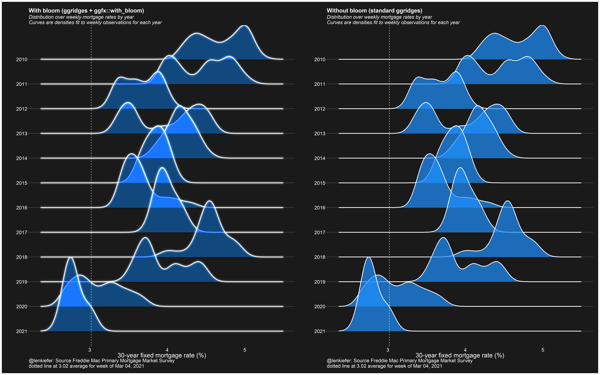

I have been recently messing around with the new ggfx package.
using #rstats ggfx::with_bloom and ggridges::geom_density
— 📈 Len Kiefer 📊 (@lenkiefer) March 4, 2021
left with ggfx, right without pic.twitter.com/L8yknjAJVw
Most of my applications (see below for a gallery) have maybe not been applying good dataviz guidelines. But I think I have found a good example.
We can use the ggfx::with_blend function to layer a recession indicator with a time series and color code the lines. This prevents us from having to use sql like syntax (as we did here) to merge on date ranges.
Instead, we can layer a rectangle with a time series and use the with_blend function to switch the colors depending on whether or not the line falls within a recession region.
First some very brief setup:
library(tidyverse)
library(ggfx)
library(tidyquant)
df <- tidyquant::tq_get("PAYEMS",get="economic.data",from="2000-01-01")
recessions.df = read.table(textConnection(
"Peak, Trough
2001-03-01, 2001-11-01
2007-12-01, 2009-06-01
2020-03-02, 2021-04-01"), sep=',',
colClasses=c('Date', 'Date'), header=TRUE)Then a standard plot with recession shading.
ggplot()+
geom_rect(data=recessions.df,
aes(xmin=Peak,xmax=Trough,ymin=-Inf,ymax=+Inf),
fill='gray',alpha=0.5)+
geom_line(data=df,aes(x=date,y=price),size=0.75,colour ="dodgerblue")+
theme(plot.caption=element_text(hjust=0))+
labs(y="",title="US nonfarm payroll employment (1000s, SA)",
subtitle="shaded area NBER recessions",
caption=paste0("@lenkiefer Source: U.S. Bureau of Labor Statistics, All Employees,",
"Total Nonfarm [PAYEMS]",
"\nretrieved from FRED, Federal Reserve Bank of St. Louis;",
"\nhttps://fred.stlouisfed.org/series/PAYEMS, March 5, 2021.")) Now make use of ggfx to blend the recession regions with the line.
Now make use of ggfx to blend the recession regions with the line.
ggplot()+
as_reference(geom_rect(data=recessions.df,
aes(xmin=Peak,xmax=Trough,ymin=-Inf,ymax=+Inf),
fill='red'),
id="rec")+
with_blend(
geom_line(data=df,aes(x=date,y=price),size=0.75,colour ="dodgerblue"),
bg_layer = "rec",flip_order=TRUE,
blend_type = 'atop'
)+
theme(plot.caption=element_text(hjust=0))+
labs(y="",title="US nonfarm payroll employment (1000s, SA)",
subtitle="red = recession, blue = expansion",
caption=paste0("@lenkiefer Source: U.S. Bureau of Labor Statistics, All Employees,",
"Total Nonfarm [PAYEMS]",
"\nretrieved from FRED, Federal Reserve Bank of St. Louis;",
"\nhttps://fred.stlouisfed.org/series/PAYEMS, March 5, 2021."))
ggfx for not so good
We could also mess around with some other features of ggfx to make some perhaps less good charts.

comparing blur to without blur
Here’s the code for the chart I tweeted out at the start that compares a plot with and without blur.
library(ggridges)
library("ggfx")
library(tidyverse)
library(lubridate)
library(data.table)
library(darklyplot) # available on github
library(patchwork)
# grab mortgage rate data
df <- data.table::fread("http://www.freddiemac.com/pmms/docs/PMMS_history.csv")
df$date <- as.Date(df$date,format="%m/%d/%Y")
df <- mutate(df, yearf=fct_reorder(factor(year(date)), -year(date)))
mycolor <- "#1e90ff"
g1 <-
ggplot(data = filter(df, year(date) > 2009),
aes(y = yearf,
x = pmms30)) +
with_bloom(
geom_density_ridges(
color = "white",
fill = mycolor,
size = 1.1,
scale = 3,
alpha = 0.7
),
colour = "white",
sigma = 10,
keep_alpha = FALSE
) +
darklyplot::theme_dark2(base_family = "Arial", base_size = 18) +
theme(
panel.grid.minor = element_blank(),
plot.title = element_text(size = rel(1.5), face = "bold"),
plot.subtitle = element_text(size = rel(1.3), face = "italic"),
panel.grid.major.x = element_blank()
) +
geom_vline(
data = . %>% tail(1),
linetype = 2,
color = "white",
aes(xintercept = pmms30)
) +
labs(
x = "30-year fixed mortgage rate (%)",
y = "",
title = "With bloom (ggridges + ggfx::with_bloom)",
subtitle = "Distribution over weekly mortgage rates by year\nCurves are densities fit to weekly observations for each year",
caption = paste0(
"@lenkiefer: Source Freddie Mac Primary Mortgage Market Survey\n",
"dotted line at ",
tail(df$pmms30, 1),
" average for week of ",
format(last(df$date), '%b %d, %Y')
)
)
g2<-
ggplot(data = filter(df, year(date) > 2009),
aes(y = yearf,
x = pmms30)) +
geom_density_ridges(
color = "white",
fill = mycolor,
size = 1.1,
scale = 3,
alpha = 0.7
) +
darklyplot::theme_dark2(base_family = "Arial", base_size = 18) +
theme(
panel.grid.minor = element_blank(),
plot.title = element_text(size = rel(1.5), face = "bold"),
plot.subtitle = element_text(size = rel(1.3), face = "italic"),
panel.grid.major.x = element_blank()
) +
geom_vline(
data = . %>% tail(1),
linetype = 2,
color = "white",
aes(xintercept = pmms30)
) +
labs(
x = "30-year fixed mortgage rate (%)",
y = "",
title = "Without bloom (standard ggridges)",
subtitle = "Distribution over weekly mortgage rates by year\nCurves are densities fit to weekly observations for each year",
caption = paste0(
"@lenkiefer: Source Freddie Mac Primary Mortgage Market Survey\n",
"dotted line at ",
tail(df$pmms30, 1),
" average for week of ",
format(last(df$date), '%b %d, %Y')
)
)
g1+g2